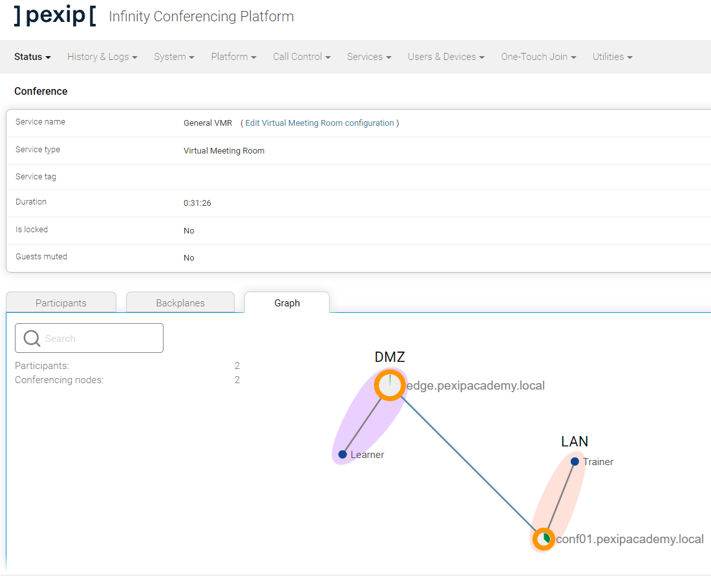

Suggested completion time: 30 minutes
No specific lab sheet section.
Before we switch the role type on this node, let's re-look at the firewall configuration required to allow these nodes to talk to each other in the first place.
NOTE: the reason for deploying the edge node initially in the Transcoding role, then changing it to a Proxying Edge role, is to help you understand the underlying Infinity components and their operation. You are in this lab to learn Infinity after all 😊. Therefore, it would be best not to consider this a typical deployment scenario; instead, you would deploy your edge nodes directly in the proxying role and configure their location appropriately.
Before starting, place a single call into your VMR via the Edge node from your laptop (outside the Jumpbox session). In Live View, you should see something similar to the image below:
And if you drill down into the VMR service, you should see:
Note that a single line connects the VMR service (or participant) to the Conferencing Node and that the node shows a high media load of 25% (as transcoding is resource intensive). This node is currently transcoding media from the external participant, and the internal Conferencing Node resources in the LAN are idle.
Change the Transcoding Edge Node into a Proxying Edge Node:
Note the warning saying that the DMZ location now contains no transcoding resource (also note that Infinity doesn't yet raise a system-level alarm regarding this issue, but you can see the problem when navigating to Status --> Locations). Of course, this is true, so we need to update this location to use resources elsewhere.
Change the DMZ Location to use the transcoding resource of the LAN Location:
Re-run the test call into the VMR service via the edge node as outlined above. Note the difference between the current Live View and conference graph, and the previous results.
Connect a second call via an internal node using a browser bookmark within the Jumpbox session. You should note that the user experience is identical to what was seen previously.
You can connect another device into the same VMR service via the edge node.
Check your system against the screenshots below that show the location's updated Live View and status pages. These show the change in the role and operation of the edge node.
Note that the blue circle representing the VMR service has a line connecting it to both internal and external nodes. These lines indicate that resources are being used from the LAN and DMZ locations. The call from the external participant lands on the edge node, and its media is proxied to the internal LAN transcoding location.
Note that a line now connects the participant to the edge and internal nodes. The resources used by the edge are much lower (1%) as the node is mainly switching packets and directing them to another transcoding locations. This media redirection allows you to target multiple resource pools (known as overflow locations), which provides a great deal of flexibility in your system design. We will cover configuring overflow locations in a later lab. However, the ability to target transcoding resources in specific areas means that you can now simplfy your compute requirements when thinking about your system design.
You will not see any media information if you hover over the line that connects the proxying node to a transcoding node, as Infinity does not show media information on a proxied link today. A proxied link is currently not considered a true backplane, although this may change in a later Infinity release. The backplane that we saw previously, connects two independent transcoding locations.
When you add another participant to the same VMR service (directly via the internal node), you will see the media load increase in the LAN location. However, the user experience is the same as when both locations were providing transcoding resources. This flexibility allows Infinity to be deployed in many different configurations to suit your requirements.

When you add a third participant to the same VMR service via the edge node, you will see the media load increase further in the LAN location. The graph now becomes more challenging to understand as the media from this third participant is also proxied to the LAN location. Each participant's media sent to a proxying edge node is redirected to the transcoding location and does NOT affect other media legs. The proxying edge node does NOT proxy media directly between participants and their endpoints.